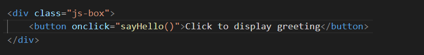
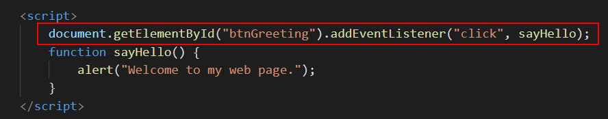

Learning Goals
At the end of this Lesson you will be able to:
- Write simple functions in JavaScript and place them in a web page.
- Call functions using event handlers and event listeners.
In this Lesson you will meet the following terms:
- Function
- Event handler
- Event listener
Exercise Files
In this Lesson you will work with the following web page:
You will find this file in your 📁 /javascript/exercises/4/ sub-folder.
About functions in JavaScript
In all programming languages, a function is a block of code that performs a particular task. JavaScript functions typically have the following format.
function functionname() {
first instruction;
second instruction;
and so on;
}
Below is an example of function that adds two numbers and displays the result in a dialog box.
/* Perform calculation with two numbers */
function addTwoNumbers() {
let firstNumber= 12;
let secondNumber= 36;
let SumTotal = firstNumber + secondNumber;
window.alert(sumTotal);
}
Rules for working with functions
Before moving on let's review some important points about functions in JavaScript:
- Unique names: A function always has a name. No two functions in the same JavaScript program may have the same name.
- No spaces: Function names may not contain spaces.
- Mixed character case: You can combine upper and lowercase letters in a function name to make it easier to read. For example, ‘setFontSize' and ‘CalculateTax'.
- Case sensitivity: Function names are case-sensitive. UpdateTotal() and updateTOTAL() are two different functions.
- Parenthesis: Like methods, function names always end with a parenthesis as in myFunction().
- Begin with the function keyword: The word 'function' always occurs before the name of the function as in function doThis(). There is no space between the function name and the parenthesis.
- Curly braces {}: Statements within a function are enclosed with curly braces {}. Statements are usually indented from the left to make them easier to read.
JavaScript functions are commonly placed at the bottom of a web page, just before the closing </body> tag.
Scattering lots of JavaScript functions at various locations in a web page, where they are mixed in with HTML tags and page content, results in a web page that is difficult to read and update.
How functions are called
Typically, functions do not run as soon as the web page loads in the visitor's web browser. Instead, most functions wait until they are called or invoked by some user action or event. More exactly, functions are invoked by one of the following two methods:
- Event handlers: These are commands positioned within the button or other web page element that calls the function.
- Event listeners: These are typically located with functions at the bottom of a web page. They are linked to the button or other calling element in the web page by an unique ID.
A typical sequence would be as follows:
- The visitor loads the web page that includes the HTML tags, the content, and the one or more JavaScript functions. But the functions do not perform any action. They just wait passively until they are called.
- The visitor clicks or taps a button somewhere on the page that has an event handler or event listener attached to it.
- The event handler or listener calls the function.
- The function then carries out a particular task, such as calculating the sale price of an item or changing the content of the web page.
Let's put together what you have learnt so far and create some simple functions.
Function
A named block of code that performs a particular action when called, typically by an event handler or event listener.
Exercise 4.1: Creating a simple function
In your /javascript/exercises/4/ sub-folder, open the following file in your VS Code and web browser:
In the empty <script> … </script> tag pair at the bottom of the web page, just before the closing </body> tag. insert the following window.alert() statement.
function sayHello() {
window.alert("Welcome to my web page.");
}
Your code should look as shown below.

You are free to choose the function name. You could equally have named this function 'displayGreeting' or 'showFirsMessage' or whatever.
Save your web page and reload it in your web browser.
Notice that the dialog box with the greeting does not display on screen.
Is there an error in your function?
No.
Your function is code is valid. But it has no effect on the browser window because the function has not been called.
Leave the exercise-4-1.html file open in VS Code and your web browser. In the next section, you will add an event handler to your function.
Working with event handlers
A function within a web page waits there passively until it is called into action by an event handler. In the most typical case the user activates the event handler, and the event handler calls the function into action.
Three common events handlers are set out in the following table.
Event Handler |
Description |
onclick |
This calls a function when the page visitor clicks once on an HTML element such as a button, image or item of text. |
ondblclick |
This calls a function when the page visitor clicks twice on an HTML element such as a button, image or item of text. |
onmouseover |
This calls a function when the page visitor holds the mouse pointer over an HTML element such as a button, image or item of text. |
Event handlers are usually attached to buttons, but you can also link an event handler with an image or some text.
Event Handler
An HTML command in a web page that calls of triggers a function into action whenever a specific type of event is performed in or with the web page.
Let's add an event handler for your 'sayHello()' function in your exercise-4-1.html file.
In the file, inside the div with a class name of js-box, enter the HTML code and content for a button element.
<button>Click to display greeting</button>
Note that this is not JavaScript. It's just HTML. It should look as shown below,

Save the file. Reload it in your web browser. It should look similar to that below.

Click the button. Does anything happen?
No.
You need to attach the button to your function with an event handler.
Update the button as shown below. And then save and reload the web page.
Your button, when clicked, will now call the 'sayHello' JavaScript function. Success!
You can now close the exercise-4-1.html file.
Note that you should not use event handlers in final, production code.
Working with event listeners
An advantage of event listeners is that they too can be located tidily at the bottom of a web page rather than mixed in with the page content and HTML tags.
Before you can use an event listener, you give a unique ID to the button or other web page element that will call the function. The next exercise provides an example.
Exercise 4.2: Creating a simple event listener
In VS Code, open the file you worked on in the first exercise and save it with the new name of exercise-4-2.html.
Also display the new file in your web browser.
In the div with a class name of js-box, replace the current line with this new one.
<button id="btnGreeting">Click to display greeting</button>
As you can see, you have removed the event handler named "sayHello()". You have also given a unique ID to the button of btnGreeting.
Next, in VS Code, scroll down the bottom of the web page and enter the following new line just above the function.
document.getElementById("btnGreeting").addEventListener("click", sayHello);
This is called an event listener, and 'connects' the button in the web page with the function that will be called when the button is clicked.
The complete code should look as follows.
Save your file, reload it in your web browser, and click the button to verify that your JavaScript code works.
Uploading your JavaScript exercise files to GitHub
Follow these steps below to upload your entire 📁 /javascript sub-folder to your website on GitHub.
- Sign in to Github and click the name of the repository (‘repo’) that holds your web pages.
- On the next GitHub screen displayed, click the Add file button near the right of the screen and then choose Upload files from the dropdown list.

- In File Explorer (Windows 10) or Finder (Apple Mac), select your entire 📁 /javascript sub-folder, and drag-and-drop it to your repository on GitHub.

- Scroll down to the bottom of the GitHub screen, and accept or edit the short message (Add files via upload) in the Commit changes box. Finally, click the green Commit changes button to upload your entire 📁 /javascript sub-folder and all the exercise files it contains.
Your uploaded files are published on GitHub at a web address similar to the following, where username is the username you have chosen for your GitHub account:
https://username.github.io/javascript/exercises/4/exercise-4-1.html
https://username.github.io/javascript/exercises/4/exercise-4-2.html
It may take a few minutes for your uploaded files to appear on GitHub.
Lesson summary
A function is a named script that performs a particular action when called or invoked.
Function names begin with the word 'function', must be unique in the web page, are case-sensitive and may not contain spaces. You can combine upper and lowercase letters in a function name to make it easier to read. Like methods, function names always end with a parenthesis.
Statements within a function are enclosed with curly braces { }, and are usually indented from the left to make them easier to read. A simple function is shown below.
/* Display an alert box with some welcome text */
function sayThankYou() {
window.alert("Thanks for visiting my web page.");
}
JavaScript functions are commonly placed at the bottom of a web page, just before the closing </body> tag.
Functions can be called by event handlers positioned within a button or web page element. The event handler contains both the name of the function and type of user action or event that will call it. For example:
<button onclick="sayHello()">Click to display greeting</button>
A better, more modern approach is to call functions with event listeners, which can be located with functions at the bottom of a web page.
A button or other element that calls a function in this way contains an ID that links the calling element with the function. In the example below, clicking the button with an ID of 'btnGreeting' will call the function named 'sayHello()'.
document.getElementById("btnGreeting").addEventListener("click", sayHello);
Return to Contents.